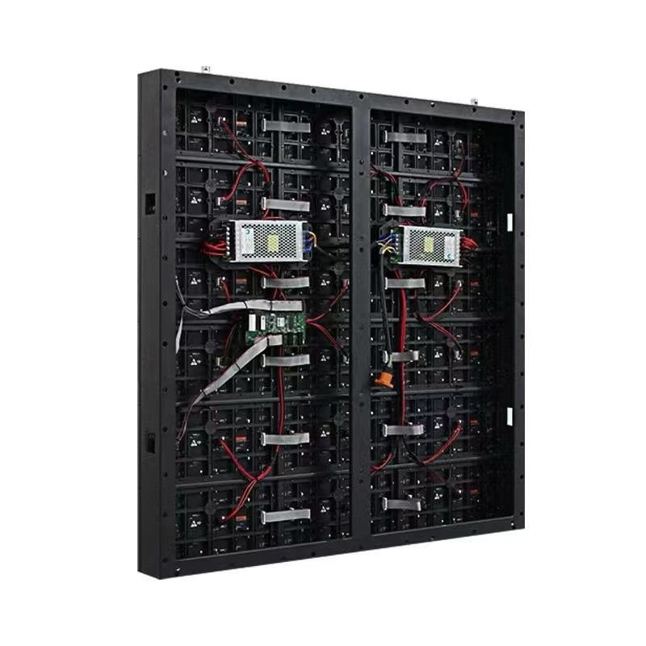
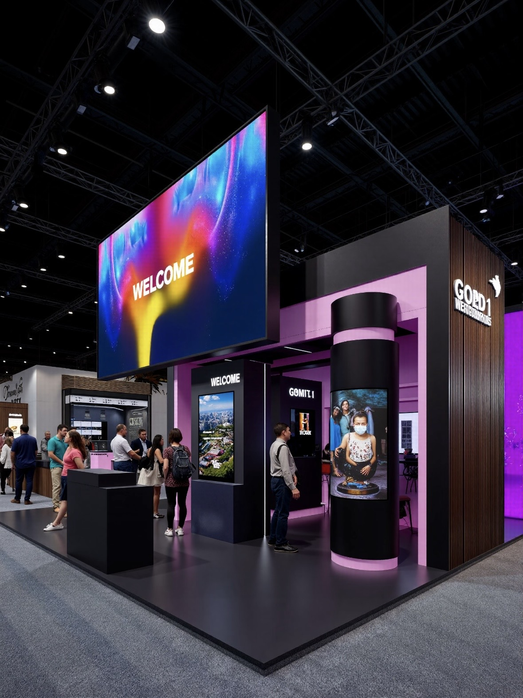

By Cassie
Cable and wiring faults cause more on-site LED installation delays than any other single category of problem, yet wiring is usually the part of the specification that gets the least attention. A display can be built to a perfect optical specification and still fail commissioning because the DC voltage sagged across a long run, because the signal cable exceeded the distance the protocol supports, or because the grounding arrangement created an earth loop that shows up as flicker on camera.
The good news is that wiring is entirely predictable once the numbers are settled. Cable sizing follows from the load and the run length, signal distribution follows from the pixel density and the data protocol, and connector selection follows from the service access the installation allows. This guide sets out the wiring decisions that matter, the practices that prevent the most common failures, and the questions buyers should settle with a supplier before the hardware ships.
The first consideration is current, not voltage. LED modules run on a low-voltage DC rail, commonly 5V, which means the current for a given power is high and the resistive loss along the cable is significant. A conductor that is entirely adequate for a short run inside one cabinet can produce a visible brightness gradient when the same gauge carries the load to the far end of a long wall. Cable sizing therefore has to be calculated from the load at the far end and the total run length, with the acceptable voltage drop as the constraint rather than a rule of thumb copied from a previous project.
The second consideration is signal integrity and distance. Cabinet-to-cabinet data normally travels over a differential protocol with a practical limit on run length before the signal degrades, and the limit shortens as the data rate rises, so a fine-pitch wall with more pixels per cabinet reaches it sooner than a coarse-pitch screen. When a run has to exceed that distance, the design has to change rather than the cable being pushed further, which usually means moving to a fiber link with a media converter or splitting the wall into additional data segments fed from separate outputs.
The third consideration is the physical environment the cable has to survive. Outdoor installations expose cable to UV, temperature cycling, water ingress at gland points and the movement of a structure under wind load, so outdoor-rated jacket material and properly sealed entries are part of the specification. Indoor installations have a different set of risks: cable routed through a ceiling void may be subject to fire performance rules, and cable in a public area needs mechanical protection against accidental damage. The table below summarises the wiring parameters that should be defined per installation.
| Parameter | Why It Decides the Design | Typical Approach |
|---|---|---|
| Load current per cabinet | Determines conductor gauge and protective device | Taken from the cabinet datasheet at peak rating |
| DC run length | Controls voltage drop and brightness uniformity | Short runs with distributed supplies, calculated drop |
| Signal protocol and distance | Limits how many cabinets chain from one output | Splitters or fiber beyond the protocol limit |
| Cable jacket rating | Must match indoor, outdoor or plenum conditions | UV-stable outdoor jacket, rated indoor cable |
| Grounding arrangement | Prevents earth loops and image interference | Single-point earth, avoid parallel ground paths |
| Service access | Determines connector type and routing | Front-accessible connectors for wall-mounted walls |
Calculate before ordering rather than after commissioning. The cabinet datasheet gives the peak load and the supply rail, and the voltage drop calculation for a candidate conductor gauge takes a few minutes. Doing that work at the specification stage means the correct cable arrives with the screen, whereas discovering the problem on site usually means sourcing a different gauge locally under time pressure and re-terminating a wall that is already hung. For any wall beyond a handful of cabinets, the calculation should be documented so that the installer is working from figures rather than judgement.
Keep power and signal routing physically separated. Power conductors carrying high current generate a field that can couple into adjacent signal cable, and while a differential protocol tolerates a good deal of interference, running the two in the same conduit for the length of a wall is an unnecessary risk that occasionally shows up as intermittent image artefacts. Where the routes must cross, crossing at right angles limits coupling far better than running parallel, and maintaining a small separation for parallel runs solves the problem in most installations without extra cost.
Terminate properly and label everything. Loose terminations create resistance and localised heating, which is a common precursor to a power fault, so connectors should be seated fully and, where the design uses screw terminals, torqued to the manufacturer's figure and rechecked during maintenance. Labelling matters for the same practical reason: a wall of identical cabinets with unlabelled cable runs turns a five minute fault isolation into an hour of tracing. Labelling both ends of every run and keeping an as-built drawing on site is the cheapest reliability measure in the whole installation.
Design for the service the screen will actually need. Cable routing should allow a module or a supply to be replaced without disturbing the runs serving neighbouring cabinets, and connectors should be reachable from the side the technician will have access to. On a wall mounted flush to a structure, that generally means front-accessible connections, since the rear void is not a realistic service position. Thinking about the maintenance visit during the wiring design costs nothing and saves hours on every subsequent intervention.
Wiring problems usually originate in a specification that was never published, so the practical value of a supplier is the quality of the electrical documentation that ships with the screen. Asia Vision Technology provides cabinet-level load figures, supply recommendations and signal routing guidance for each product family, which lets the electrical contractor size conductors and protective devices against documented values. Cabinets are supplied with the power and data accessories that belong to the series, so the connectors on site match the design drawing rather than being adapted from whatever is available locally.
The range covers the environments where wiring practice diverges most sharply. Indoor CV-PRO and COB panels run from 800 to 2500 nits with refresh at 3840 Hz and above, while the D-PRO outdoor series is IP65 rated at 8000 nits and above, which means the cable entries, glanding and UV exposure are all part of the cabinet design rather than left to site improvisation. Pixel pitch spans P0.9 to P20, so a small boardroom wall and a large facade installation can be wired and controlled from the same supplier and, where practical, from the same design method.
Products hold CE, FCC and RoHS certification, with UL and ETL documentation available for North American installations and UKCA for the United Kingdom, and the conformity evidence travels with the shipment so that an inspector is not waiting for paperwork. Every panel carries a three-year warranty and a rated 100,000 hour service life, and production is quoted at 15 to 20 working days.
Cable and connector specification has to be read alongside the cabinet specification, because the two are not independent. A fine-pitch cabinet with a high pixel count carries more data per unit area, which shortens the supported signal run and raises the number of data outputs the wall requires. A high-brightness outdoor cabinet draws more current, which increases the conductor gauge or shortens the acceptable DC run. The table below sets out the wiring specification envelope that accompanies the main product families, so that the electrical design can be settled alongside the screen specification rather than after it.
Where an installation falls outside these envelopes, the design changes rather than the specification being stretched. A wall that exceeds the copper signal distance moves to fiber, a wall whose DC runs are long gains additional distributed supplies, and an installation in a public area adds mechanical protection. Each of those changes is straightforward when it is designed in and disruptive when it is discovered during commissioning.
| Product Family | Power Feed | Signal Distribution | Cable Notes |
|---|---|---|---|
| CV-PRO Indoor | 5V DC per cabinet, distributed supply | Differential copper chain, splitters as needed | Rated indoor jacket, separation from power runs |
| COB Indoor | 5V DC per cabinet, distributed supply | Differential copper chain, fine pitch needs more outputs | Sealed cabinet, entries must preserve sealing |
| D-PRO Outdoor | 5V DC per cabinet, derated supply | Copper within limits, fiber for long runs | UV-stable jacket, sealed glands, high current |
| X Series Rental | 5V DC per 500 x 500 mm cabinet | Quick-lock data loop per cabinet column | Rapid-connect designed for repeated rigging |
| Large facade wall | Distributed groups, redundant path | Segmented data with fiber backbone | Voltage drop and grouping drive conductor size |
Cable and connector accessories are shipped with the cabinets so that installation does not stall waiting for a separate consignment that is still in transit. Power and data leads, quick-lock connectors and the accessories belonging to the series are crated alongside the panels in the same shipment, and the packing list itemises them so that a short delivery is identified at the point of unpacking rather than on the day the wall is due to be energised. For phased projects, the accessory quantity is matched to the cabinets in each phase rather than being held back to the final shipment.
Voltage and frequency are set for the destination market at the factory, and the cabinet input rating is labelled, so an installation in a 110V region and one in a 220V region are both supplied ready to connect. Where a destination requires a conformity mark or a local registration, the relevant documentation is prepared with the shipment. Countries operating a mandatory certification scheme are handled through the appropriate route so that the consignment is not held at port awaiting a certificate that could have been raised during production.
Freight planning is based on crated volume and weight, since cable adds bulk without adding much weight and changes the packing calculation for a large order. Sea, air and rail options are matched to the date the site can accept delivery, and projects with a tight commissioning window are commonly split so that the cabinets and the accessories for the first phase arrive together. Production is quoted at 15 to 20 working days.
Comparing wiring quality between suppliers is largely a matter of asking for documents rather than reading a datasheet headline. The useful questions are whether per-cabinet load figures are published, whether the connectors are specific to the cabinet series or generic components, whether outdoor entries are designed to preserve the IP rating, and whether the supplier provides a signal routing plan for the wall size being ordered. A supplier who answers those questions with numbers is a supplier whose installation will go predictably; one who answers them with assurances is a supplier whose wiring will be resolved on site.
It is also worth comparing the serviceability of the wiring layout. A design in which each cabinet's connections are independent means a fault can be isolated without disturbing neighbours, whereas a shared bus that runs through every cabinet turns a single connector problem into a whole-wall investigation. The table below lists the comparison points that distinguish a well-engineered wiring package from an adequate one.
| Comparison Point | What to Ask | Why It Matters |
|---|---|---|
| Documentation | Per-cabinet load and signal routing plan | Lets the electrical design be completed before delivery |
| Connector standard | Series-specific or generic connectors | Determines repeatable assembly and spare availability |
| Outdoor entry design | How sealing is preserved at cable glands | Protects the IP65 rating over years of weather |
| Service isolation | Whether cabinets are independently wired | Limits a fault to one section of the wall |
| Spare availability | Cable and connector spares held on site | Reduces outage time against a 15 to 20 day production lead |
Wiring faults present as symptoms rather than clear failures, which is why the speed of diagnosis matters more than the speed of replacement. Asia Vision Technology supports installations with documented wiring and load data, guidance on isolating a fault to a cabinet or a data segment, and factory contact for cases where the symptom points to an interaction between power and signal rather than a single failed component. Because cabinets are independently wired within a series, a fault can normally be resolved by a swap in one section without de-energising the whole wall.
Panels carry a three-year warranty and a rated 100,000 hour service life, and the warranty covers the fitted power supply and driver alongside the module rather than treating the electrical section as a consumable. Cable and connectors supplied with the cabinet form part of the original build, and replacement units are available after the warranty period, with production quoted at 15 to 20 working days for orders placed against an operating screen.
For installations where downtime is costly, the recommended arrangement is a small on-site pool of spare modules, supplies and cable sized to the cabinet count and the maintenance round. Spares are interchangeable within a series, so a modest stock covers a large wall, and the single most useful additional item is a correctly labelled as-built wiring drawing kept with the spares so that a technician who did not commission the screen can still trace a run quickly.

For this requirement our range covers it directly: the COB Z rental series (7680Hz flip-chip) and the COB ZH touring series (sealed, wind-rated).